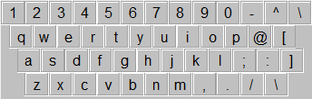
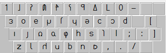
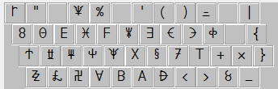
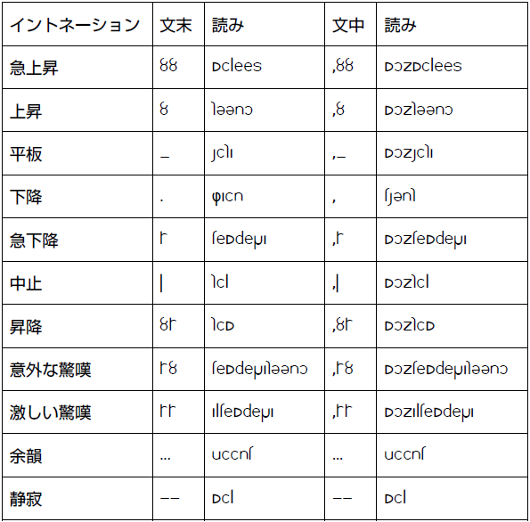

|
Lunar Alphabet
Overview
Lunar alphabet has 25 letters. If schwa (q) is included, it has 26 letters.
It has marks like ! and ?.
You can download the fonts of Lunar alphabet here. First, download kardinal.
Here's the correspondence table.
Non-shifted (lower case)


Shifted (upper case)

Lower Case
1) used for writing words.
Upper Case
1) used for sounds of foreign languages. e.g. S means "th" in "thank."
2) used for emphasizing words.
Number
1) used for numbers.
Intonation
Sound of intonation

-sharp ascension: surprise
-ascension: interrogation
-flat: disinterest and so on
-descension: normal
-sharp descension: surprise, anger
-stop: surprise of a sudden
-hoisting: suspicion, rude
-surprise of unexpectedness: surprise of unexpectedness
-big surprise: big surprise
|